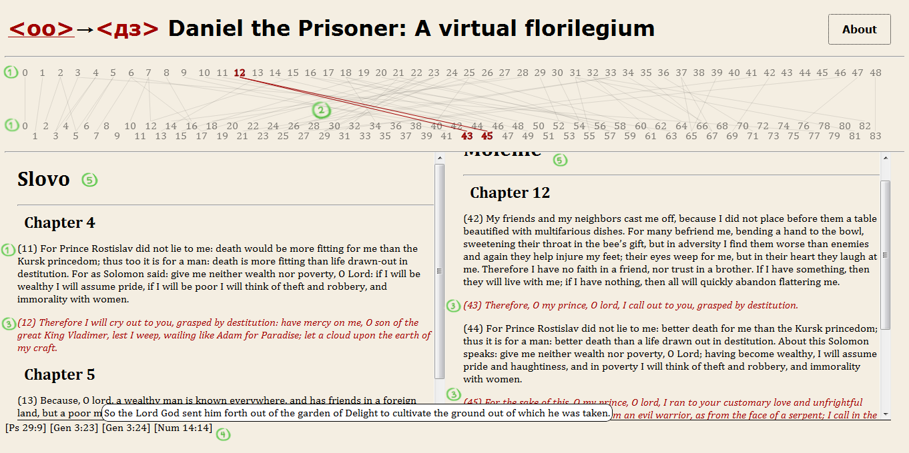

Maintained by: Robert Romanchuk (rromanchuk@fsu.edu) and David J.
Birnbaum (djbpitt@gmail.com)
![[Creative Commons BY-NC-SA 3.0 Unported License]](http://www.obdurodon.org/images/cc/88x31.png "Creative Commons BY-NC-SA 3.0 Unported License") Last modified:
2017-04-02T16:21:36+0000
Last modified:
2017-04-02T16:21:36+0000
Maintained by: Robert Romanchuk (rromanchuk@fsu.edu) and David J.
Birnbaum (djbpitt@gmail.com)
Last modified:
2017-04-02T16:21:36+0000
One of the most difficult tasks one encounters when teaching students about medieval texts and textual practices is to distance them from contemporary notions of “originality” and “authorship” and to immerse them in the world of the medieval reader-compiler, who does things with texts previously read and memorized—assigning them new meanings in occasional contexts, reworking them with rhetorical tropes, and ultimately applying them to his or her own life in an effort at conversion, to “become the text.” A great deal of writing in the Middle Ages is just such a re-elaboration of, reordering of, or gloss upon an earlier text. Emphasizing logical argumentation and “originality,” modern pedagogues leave little room for an understanding of the way most of the world worked with text until a few hundred years ago (and much of it still does).
The present edition of the East Slavic work(s) attributed to “Daniel the Prisoner” has been designed as an interactive virtual florilegium, a “collection of flowers” culled from the medieval compiler’s garden of readings. It provides students of medieval European literatures with an on-line, XML-based, English-language “memory palace” where they can follow the creation of a new writing out of older ones and in turn compile their own medieval-style text. With artificial memory standing in for the lost ars memoriae, this edition opens a textual window onto the Middle Ages, through which students can recover the habits of the medieval monastic reader and experience the principles that guided medieval textual compilation.
The text (or rather, pair of texts) attributed to “Daniel the Prisoner” (Daniil Zatočnik) has been called one of the most original works of Early East Slavic literature, although it consists largely of material borrowed from elsewhere. It is “Daniel’s” virtuoso reordering and re-elaboration of his sources that has tempted students and scholars into imagining a creative author at work. There are two main redactions or versions, the twelfth-century Slovo Daniila Zatočnika (“Word of Daniel the Prisoner”) and the thirteenth-century Molenie Daniila Zatočnika (“Supplication of Daniel the Prisoner”). Though the textual core of both texts consists largely of the same material, the two redactions (and even manuscripts within the redactions) differ significantly in their use and arrangement of this material. Either one could have been compiled from the other. Indeed it may be said that the “Daniel” texts, like other florilegia, defeat traditional textual criticism: while the Slovo may reflect an earlier arrangement of textual material, the Molenie may be primary at the micro-level, in places more closely reflecting its sources than the Slovo.
Traditional scholarship held that the Slovo and Molenie were variants of an actual epistle, and thus focused on problems of the purported author’s social position and the text’s social function. Some noted the similarity of the “Daniel” texts to the Byzantine genres of the begging poem and mirror of princes. In 1997, the late Henrik Birnbaum and one of the present authors argued that the variegated contents, kaleidoscopic structure, and fluid manuscript tradition of the Daniel texts could be explained against monastic meditative-compilatory practices. These are expressed in the common medieval metaphor (used by “Daniel” himself) of the reader-compiler as a bee floating from flower to flower, taking what he or she needs from each. Jean Leclercq has described these practices in his classic The Love of Learning and the Desire for God:
The monk would copy out texts he had enjoyed so as to savor them at leisure and use them anew as subjects for private meditation. The monastic florilegium not only originated in the monk’s spiritual reading but always remained closely associated with it The florilegia, in which reading and prayer become as one, provided the best possible means for the kind of meditation closest to their hearts, a means completely devoid of any method. (73–74)
Leclercq may overstate his case somewhat, as there is a discernable method at work in monastic compilation—that of the weaver of a fabric, another of “Daniel’s” metaphors. Leclercq himself describes meditative prayer, the basis of monastic compilation, as
a chain reaction of associations which will bring together words that have no more than a chance connection … Each word is like a hook, so to speak; it catches hold of one or several others which become linked together and make up the fabric of the exposé. (182–84)
A florilegium, according to Mary Carruthers in The Book of Memory, is “basically the contents of someone's memory, set forth as a kind of study-guide for the formation of others’ memories” (174). In her The Craft of Thought, Carruthers notes that the more surprising a turn of phrase, “arousing emotions of fear or delight, wonder and awe” (117), the more firmly it punctures a given sentence in the heart of the monk, and the more effective the ensuing compunction. Paradoxically, a “difficult trope” kept the meditating mind on track at the same time that it diverted it; it forged the associative chain at the very place that it broke it. Consider the passage near the beginning of the Slovo, a reminiscence of Ps. 136:9, elaborated with a condensed memory-image of writing on the heart and the associative chains forged thereby: “Because of this I tried to write down every link of my heart, and struck them apart evilly, like the bygone infants against the rock.” The trope attests to its own effect: it breaks the associative chain with a striking (indeed, traumatically violent) ornament at the same time that it is a product of that association.
That the Slovo and Molenie are replete with citations from various sources has long been recognized and is a factor common to many genres of medieval writing. What “Daniel” shares specifically with the florilegia are the “chance connections” of his textual chains, resulting from the verbal “hooks” of his meditative work. Consider the following passage from the Molenie:
As I say, so it will be; I command to flee, and they flee; I command to pursue, and they pursue. One will pursue a hundred and a hundred will move tens of thousands. He who trusts in me is like the mountain Sion, he will not be moved in the ages.
Here we find three sentences (two of them being scriptural citations) linked together by two words, pursue and move. Pursue occurs in the first and second sentences while move occurs in the second and third. The sentences are linked on the basis of the repeating words, not by any systematic thought. Or consider the following passages:
O my prince, O lord! Rust eats iron, and sorrow a man’s mind; a moth damages garments, and sorrow a man’s mind. Just as tin poured too often is destroyed, thus too a man, receiving much misfortune, grows wretched; for they (misfortunes) dry up a sorrowful man’s bones.
For gold is tried by fire, and man by adversity; wheat ground much shows forth clean bread, and a man, tolerating misfortune, seems thoughtful and wise. For whoever will not have been in much misfortune, like at the devil in his fumes, in him there is no cognition.
Here “Daniel” contradicts himself, claiming first that man is destroyed by misfortune, then that misfortune brings wisdom. The first excerpt consists entirely of citations from Sirach, Job, and Proverbs, while the second begins with a quotation from Sirach and may continue with aphorisms whose source is not yet known. In each we see the repetition of the words sorrow and misfortune. Like a bee floating from flower to flower or a weaver of fabric, “Daniel” selects material to be used on distinct occasions, and his Slovo and Molenie may be considered his honeycomb or brocade.
The translation of the texts in this edition aims at a one-to-one correspondence between English and Slavic word roots. While complete consistency is not possible, through a process of trial and error and the construction of a concordance of Slavic roots and their English equivalents, we have succeeded to a large degree in preserving the basic texture of the Slavic text and the repetitions of words formed from a common root. This has meant that at times the precise meaning of a word has been sacrificed to maintain the literal meaning of the word’s root(s). For example, the Slavic compound dobrorazumie, a calque of the Greek eugnômosynê, meaning “right-mindedness” (hence “candor,” “gratitude,” “loyalty,” or “generosity” in various contexts) has been translated as “good reason,” the meaning of its roots. This method of translation should make the verbal cues that guided monastic compilers more readily visible to the English reader.
Our edition provides the texts of the Slovo and Molenie in two parallel windows. When the reader selects a textual unit in one window, the corresponding unit(s) will appear in the other window. Thus the reader may read text in one version and its analogue in the other at the same time. A map in the form of a paired plectogram, simulating the well-trained memory of the medieval compiler, shows the reader’s place in both versions and helps him or her see the relations between florilegia where traditional stemmata fail. The reader may switch from version to version and continue reading at any time (clicking on the title Slovo or Molenie expands the text again), or browse the units in a non-linear way, like a medieval reader-bee hovering over the text. Medieval memory is also simulated by the ability to search for words or word-roots in each text. For the moment, the browser’s search function fulfills this role.
The medieval reader, steeped in the text of the Psalms, wisdom books, and many other authoritative writings, would quickly recognize “Daniel’s” many borrowings. We have implemented a source window, alerting the reader to these scriptural sources: a mouse-over provides the relevant passage itself. Scholars such as Mindalev, Thomson, Colucci and Danti, and others have identified extra-scriptural sources such as the “Bee” (Pchela) miscellany and the Tale of Akir the Wise; these will be added in the future. Visual aids, such as the frescoes of Byzantine circus performers in Kyiv’s Cathedral of St. Sophia (cf. the somewhat confused ecphrasis or description of such a performance in the Molenie), will eventually be included as well.
Following the principles of reading and compilation outlined above, “Daniel” offers a paradigmatically “readerly” text. His style is attractive, as many of his sentences have been ornamented using the striking rhetoric that, as scholars believe, served the work of memory and the ethics of reading. Students will enjoy reading his florilegium, while gaining knowledge of how books and texts were read, understood, and compiled in the Middle Ages, and the themes and problems that interested readers of the time. Rooted in the scriptural inheritance common to West and East (the wisdom books of the Bible in particular), it is organized into ethical themes: wisdom and folly, charity and greed, the fear and love of God, friendship, wealth and poverty, grief and joy, lying and slander, princely power, and self-love. The extended misogynistic chapter in the Slovo should be of interest to instructors who teach gender studies and monastic culture in their courses, while the satirical chapter against unworthy monks and aristocrats in the Molenie may serve as an introduction to “carnivalesque,” anti-establishment tendencies in the Middle Ages. As noted earlier, the Molenie contains an ecphrasis of a Hippodrome scene, which may serve to introduce the theme of “translation” from a visual to a verbal language.
Sample assignments for a course in the Literature of Old Rus′ might include the following:
The following headings are taken from the “Bee,” a popular florilegium: good deeds and evil, wisdom, manliness and strength, truth, brotherly love and friendship, charity, power and rule, lie and slander, wealth and poverty, study, anger, silence, passion, sin and confession, gluttony , sadness and happiness, drunkenness, pride, beauty, glory, talkativeness, faith, memory, the soul, law, madness, self-love, death, women, old age and youth, patience.
Making use of these headings, compile a florilegium based on “Daniel’s” material and other course materials. Your compilation must consist entirely of found text, which must be reordered so that it no longer resembles the source. Identify the source of each passage in footnotes, and show (using italics) the links joining them, whether "things" (or topics), ad res, or "words," ad verbum.
“Daniel” claims to be an exile or prisoner. How does this social position legitimate his ordering and choice of texts—or, conversely, how might his choice and ordering of texts have led later readers to “locate” him in exile?

Developed by: David J. Birnbaum (University of Pittsburgh, djbpitt@pitt.edu), Eric Gratta (University of Pittsburgh), Matthew W. Herrington (University of Georgia), and Robert Romanchuk (Florida State University, rromanchuk@fsu.edu)